Ce manuel accompagne la gestion de matières dimensionnées et sérialisées : plaques, pièces découpées, chutes et ouvrages. Il décrit les fonctions présentes dans mat_reco, avec un parcours principal centré sur Material Cutting Plan (MCP).
Ce que montrent les images
Figures 1 à 8 : captures des vrais composants de l’atelier Vue, exécutés avec des données de démonstration. Aucun document métier n’est enregistré.
Figure 9 : texte réel de confirmation, dans un hôte de dialogue local ; son apparence Frappe sur le site reste à confirmer.
Figures 10 à 13 : illustrations pédagogiques reconstituées d’après les champs des formulaires. Elles ne sont pas des captures d’une session ERPNext.
Figure 14 : fenêtre Repack issue du script réel, avec une réponse de démonstration et un hôte local.
Trouver une fonction
Utiliser la recherche ERPNext et saisir le nom du document : Material Receipt Plan, Material Cutting Plan, Material Issue Plan, Material Reconfiguration ou Stock Entry. La présence d’un menu dédié dépend de la configuration du site et des droits.
Repère
Signification
Enregistrer
Sauvegarder le document ou les incidents ; ne signifie pas que le mouvement de stock est soumis.
Soumettre
Valider définitivement un document selon les règles ERPNext.
MCP
Material Cutting Plan : plan de découpe multi-commandes.
Repack
Stock Entry qui consomme des entrées et produit des sorties.
02 · Fonctions et responsabilités
Fonction
Document / écran
Utilisateur principal
Réception dimensionnée
Material Receipt Plan / Purchase Receipt
Responsable de stock
Besoins client
Quotation / Sales Order
Commercial ; contrôle atelier
Planification multi-commandes
Material Cutting Plan
Responsable atelier
Incidents et compensation
Atelier de découpe UX 2.0
Opérateur habilité
Consommation et production
Stock Entry · Repack
Responsable de stock
Sortie de matière hors production
Material Issue Plan
Responsable de stock
Traçabilité / livraison
Serial No, bundles, Delivery Note
Stock / expédition
Reconfiguration historique
Material Reconfiguration
Utilisateurs du circuit existant
Réglages
Reconfiguration Settings / Item
Administrateur fonctionnel
Répartition proposée, à valider
L’opérateur constate les incidents, vérifie les dimensions et propose les ajustements.
Le responsable atelier vérifie la couverture de la commande et le plan effectif.
Le responsable de stock contrôle les séries, les entrepôts et les lignes de mouvements avant soumission.
L’administrateur définit les articles, les droits et les paramètres de découpe.
Le rôle habilité à soumettre le MCP, et l’ordre de cette soumission par rapport aux Repack, sont des décisions de procédure à valider. Les deux soumissions sont distinctes.
03 · Flowchart du parcours principal
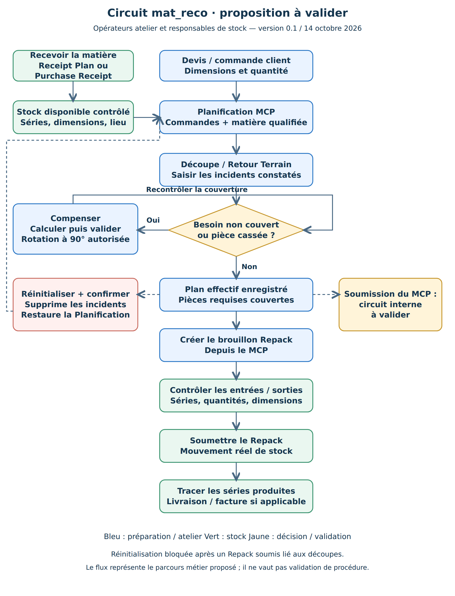
Flowchart 1 — Parcours métier proposé. Les boucles et la responsabilité de soumission du MCP sont à valider.
04 · Prérequis et conventions
Avant de commencer
Une société et des entrepôts cohérents doivent être configurés.
La matière source du MCP est un article PRIMAIRE ; les pièces sont liées à leur matière par la hiérarchie d’articles.
Les articles gérés en séries doivent avoir la gestion Serial No activée et des dimensions renseignées.
La réception et les séries disponibles doivent correspondre à la matière, à l’entrepôt et à l’épaisseur attendus.
Les commandes à découper doivent être enregistrées avec dimensions et quantités correctes.
Donnée
Convention
Longueur / largeur / hauteur
Millimètres. « Hauteur » correspond au deuxième côté dans certains formulaires.
Épaisseur
Millimètres ; vérifier la compatibilité de la matière.
Surface
m² = longueur × largeur / 1 000 000.
Périmètre
m = 2 × (longueur + largeur) / 1 000.
Kerf
Largeur de matière perdue par le trait de coupe, en mm.
Série
Identifiant d’une unité physique ; ne pas le confondre avec une quantité en m².
Enregistrer, confirmer, appliquer
Dans l’atelier, « Confirmer » accepte une opération dans la session. « Appliquer à l’aperçu → » enregistre les incidents auprès du serveur quand l’atelier est relié au document. Contrôler le message de succès et l’état Enregistré. Une compensation utilise directement « Valider la compensation ».
05 · Articles et besoins dimensionnés
Type d’article
Usage
PRIMAIRE
Matière source : plaque ou matière disponible à découper.
DECOUPE
Pièce dimensionnée issue d’une matière.
OUVRAGE
Article composite dont les composants peuvent contenir des découpes.
SERVICE
Prestation liée à une ligne de devis.
ACCESSOIRE
Élément complémentaire ; quantité saisie dans le dialogue de devis.
Ouvrir Item et contrôler Item Types.
Pour la matière, renseigner longueur de plaque, largeur et épaisseur ; activer la sérialisation si nécessaire.
Pour une découpe, contrôler Parent Item et Requires Dimensions selon le paramétrage retenu.
Pour un ouvrage, vérifier Is Composite et la table des composants avec les facteurs de quantité.
Éviter les références circulaires entre articles ; la profondeur d’exploration est limitée.
Devis et commande
Saisir la quantité et les dimensions client sur la ligne. Les contrôles de devis imposent longueur, largeur et, pour les articles Requires Dimensions, épaisseur positive. La commande possède aussi des contrôles de longueur et largeur. Contrôler toujours l’épaisseur même si le formulaire ne bloque pas sa saisie.
06 · Services, accessoires et commandes
Dans Quotation, sélectionner la ligne parent DECOUPE ou OUVRAGE.
Utiliser le bouton de services de la ligne si disponible : Services / Accessoires.
Filtrer par services, accessoires ou texte de recherche.
Contrôler la base de calcul et la quantité finale ; sélectionner les lignes voulues.
Insérer les éléments sélectionnés, puis contrôler prix, quantité et lien avec la ligne parent.
Créer ou contrôler la Sales Order ; vérifier que les dimensions et composants attendus ont été conservés.
Base de calcul du service
Quantité proposée
SURFACE
Surface de la pièce en m² × quantité parent.
PERIMETRE
Périmètre en m × quantité parent.
PIECE
Quantité parent.
FIXE
Quantité fixe définie sur l’article, avec valeur de repli.
MANUEL / ACCESSOIRE
Quantité à saisir et contrôler.
L’explosion des besoins pour le MCP se concentre sur les DECOUPE descendants de la matière source et les composants d’OUVRAGE correspondants. Les services ne sont pas des rectangles à placer.
07 · Recevoir la matière
Créer un Material Receipt Plan.
Renseigner Company, Warehouse, Posting Date et Item.
Saisir une Quantity entière strictement positive : chaque ligne représente une série.
Saisir Amount, puis contrôler les lignes de détail. PRIMAIRE reprend les dimensions de l’article ; DECOUPE permet la saisie des dimensions par ligne.
Enregistrer : contrôler les identifiants de séries prévus et les surfaces calculées.
Contrôler épaisseur, total de surface, montant et dimensions comptables exigées par la société.
Soumettre : le système crée les Serial No, les bundles et une Stock Entry Material Receipt soumise.
Vérifier l’entrée de stock et la présence des séries dans l’entrepôt prévu.
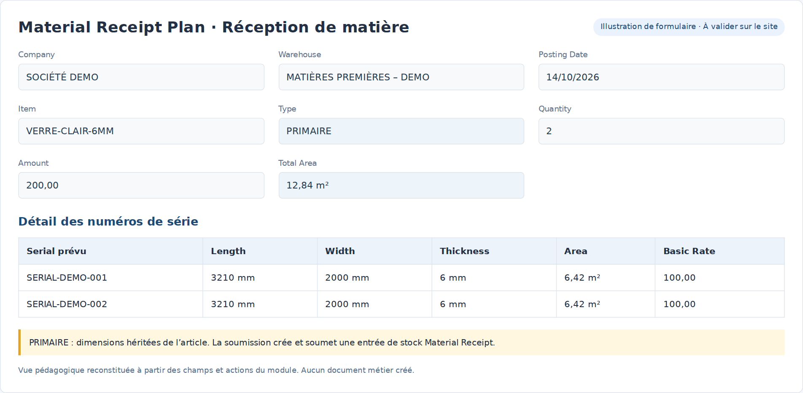
Figure 10 — Illustration du formulaire de réception ; champs et calculs issus du module.
08 · Réception d’achat et séries disponibles
Circuit Purchase Receipt
Sur la réception d’achat, saisir la matière reconfigurable et les séries / bundles.
Contrôler les dimensions de plaque de chaque ligne, éventuellement préremplies depuis Item.
Vérifier longueur et largeur positives et que l’article est sérialisé.
Après soumission, contrôler les dimensions et l’état de matière des Serial No concernés.
Les scripts livrés reportent notamment longueur, largeur, qualité, état Full et lien racine vers les séries. Leur activation sur votre site doit être confirmée ; ne pas considérer tous les champs comme garantis sans contrôle.
Lire l’état d’une série
État / lien
Lecture utilisateur
Full
Matière entière selon son état matériel.
Partial
Chute ou matière partiellement utilisée.
Active + entrepôt
Contrôle de disponibilité pour les opérations qui l’exigent.
Parent Serial No
Lien avec la matière dont la série provient.
Root Serial No
Matière d’origine de la chaîne de transformation.
Material Cutting Plan / Stock Entry
Lien de traçabilité vers le plan ou le mouvement.
09 · Préparer la Planification MCP
Créer Material Cutting Plan en mode Planification.
Choisir Company, Source Warehouse et Source Item de type PRIMAIRE.
Contrôler les variantes autorisées pour cette matière.
Dans Outils, choisir Select Orders for Source Item ; vérifier les commandes proposées et conserver uniquement le périmètre à produire.
Choisir Get Stock. Contrôler les dimensions et la colonne Is Qualified ; les lignes chargées sont initialement qualifiées.
Ajuster Kerf mm et Allow Rotation pour le calcul initial, puis enregistrer.
Figure 11 — Illustration des paramètres et tables de Planification MCP.
10 · Comprendre les choix du stock et du calcul
Le stock proposé combine la matière source et ses variantes, dans l’entrepôt choisi. Les dimensions invalides excluent une série. Les candidats comportent des matières Full ou Partial ; contrôler leur disponibilité avant exécution.
Ordre normal de recherche
Famille de matière
1
Chutes de l’article source.
2
Chutes des variantes admises.
3
Plaques entières de l’article source.
4
Plaques entières des variantes admises.
Lorsqu’une liste explicite de séries est fournie, son ordre peut piloter le choix. L’algorithme de placement n’est pas une preuve de coupe physiquement réalisable par toutes les machines : vérifier contraintes de coupe, sens du matériau et pratiques d’atelier.
Paramètres à faire confirmer par le responsable
Paramètre
Usage
Kerf mm
Consommation du trait de coupe.
Allow Rotation
Autorise les permutations d’orientation au calcul initial.
Packing Algorithm
maxrects, guillotine ou skyline.
Packing Heuristic
Critère de choix de placement.
Max Depth
Limite d’exploration des articles composites.
Add Waiste to stock
Inclut les déchets parmi les sorties de Repack lorsque le circuit le prévoit.
11 · Lire l’atelier de découpe
Figure 1 — Interface réelle de l’atelier, avec deux plaques de démonstration.
En haut : sélectionner une plaque ou utiliser précédente / suivante. Une seule plaque est affichée à la fois.
Au centre : voir la géométrie de la plaque et de ses zones.
À droite : voir la sélection, les dimensions, puis le panneau de l’opération ou de compensation.
En bas : lire la légende, l’état d’enregistrement et le bouton d’application.
Couleur / repère
Signification
Bleu
Pièce ou produit fini.
Gris hachuré
Chute rectangulaire.
Vert hachuré
Chute en L ; une encoche a déjà été retirée.
Rose hachuré
Déchet.
Zone occupée
Matière détruite ou indisponible.
Contours / surimpression
Sélection, cible et comparaison avant/après : lire la légende de l’action.
Les zooms et le bouton Ajuster à l’écran changent l’affichage. Ils ne modifient pas les dimensions de la pièce.
12 · Passer en Retour Terrain et enregistrer
Sur le MCP, passer le champ Mode à Retour Terrain et enregistrer avant de traiter les incidents.
Ouvrir Interface → UX 2.0 ou agrandir l’aperçu intégré.
Sélectionner la pièce ou la zone concernée : le menu présente seulement les actions applicables.
Choisir l’action, saisir ses paramètres et sélectionner une cible si nécessaire.
Comparer Avant / Après / Superposer ; confirmer ou annuler l’opération.
Répéter pour les autres incidents puis choisir Appliquer à l’aperçu →.
Attendre le succès du serveur et vérifier les incidents sauvegardés avant de préparer un Repack.
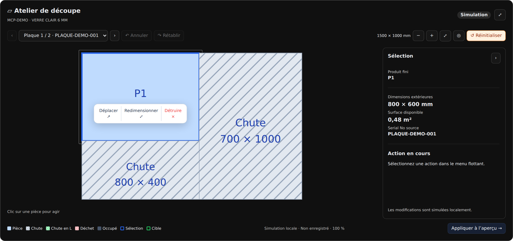
Figure 2 — Menu d’actions sur une pièce dans l’interface réelle.
Ctrl/Cmd + Z et la commande Annuler rétablissent une étape de la session. Rétablir refait une modification. Réinitialiser a une portée différente : il restaure la Planification complète après confirmation.
13 · Déplacer une pièce et la tourner à 90°
Sélectionner le produit fini et choisir Déplacer.
Si nécessaire, naviguer vers une autre plaque. La pièce source reste sélectionnée.
Choisir une chute compatible. Les zones détruites, déchets et zones occupées ne sont pas des destinations ordinaires de déplacement.
Dans Orientation, choisir Automatique, Actuelle ou Tourner à 90°.
Contrôler le placement, les dimensions physiques et la matière restante.
Confirmer puis Appliquer à l’aperçu → pour enregistrer l’incident.
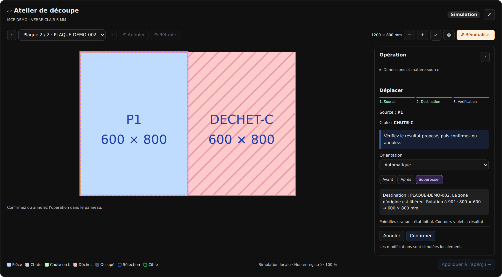
Figure 3 — Une pièce 800 × 600 passe à 600 × 800 mm sur une autre plaque.
La zone source est libérée. La destination conserve ses restes utiles. Dans une chute en L, le placement ne peut pas recouvrir l’encoche retirée. Le curseur de déplacement indique la sélection de cible ; le symbole d’interdiction indique une cible incompatible.
14 · Redimensionner ou déclarer une destruction
Redimensionner
Sélectionner une zone dont le menu propose Redimensionner.
Saisir la longueur et la largeur réellement obtenues, puis contrôler l’aperçu.
Confirmer et appliquer les incidents. Une réduction reste dans l’espace source ; elle ne permet pas d’agrandir la pièce au-delà de la matière.
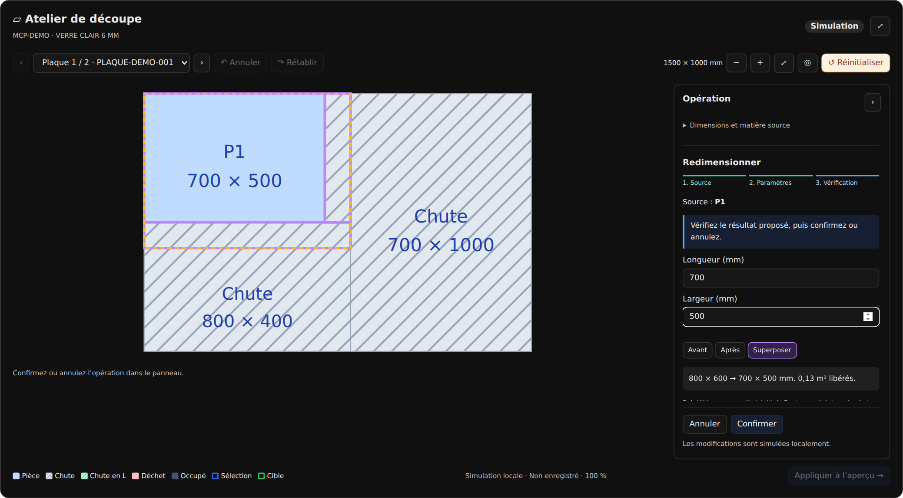
Figure 4 — Prévisualisation d’une réduction dans l’atelier réel.
Détruire
Pour une pièce cassée ou une zone inutilisable, sélectionner Détruire puis confirmer et appliquer. La zone reste représentée comme matière occupée / indisponible et n’est pas un produit fini à générer dans le Repack.
15 · Fusionner et conserver une chute en L
Action
Utilisation
Fusionner
Étendre la chute source avec une zone libre adjacente pour obtenir un rectangle. Une partie du donneur peut rester séparée.
Chute en L
Combiner exactement deux zones libres compatibles, avec au moins une chute, en conservant une encoche supérieure gauche.
Sélectionner une chute ou une zone dont le menu propose l’action.
Choisir Fusionner ou Chute en L.
Sélectionner la seconde zone sur la même plaque. Les zones doivent être contiguës et leur union compatible.
Contrôler les restes du donneur, l’encoche et la surface utile.
Confirmer puis appliquer les incidents.
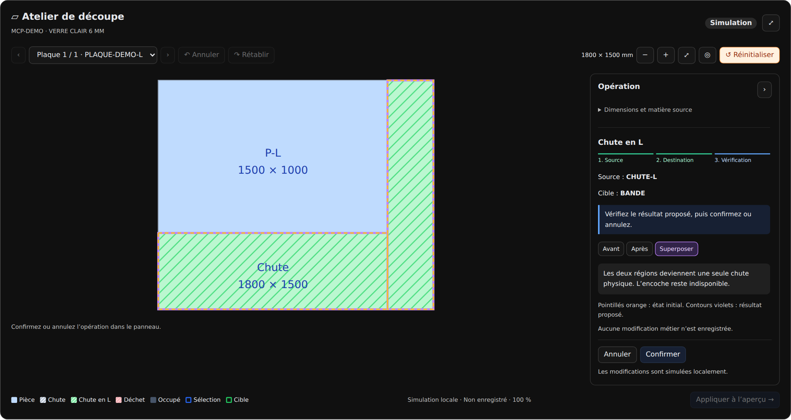
Figure 5 — Prévisualisation réelle d’une chute en L autour d’une pièce.
Une fusion rectangulaire et une chute en L ne sont pas interchangeables : choisir la représentation de la matière réellement conservée après coupe.
16 · Ouvrir la compensation des découpes
Enregistrer les incidents constatés en Retour Terrain.
Choisir Compenser, sur la même ligne que Réinitialiser.
Lire la quantité à compenser, les références, dimensions et commande associée.
Laisser le mode Automatique pour respecter les priorités par défaut.
Choisir Calculer et examiner la proposition, plaque par plaque.
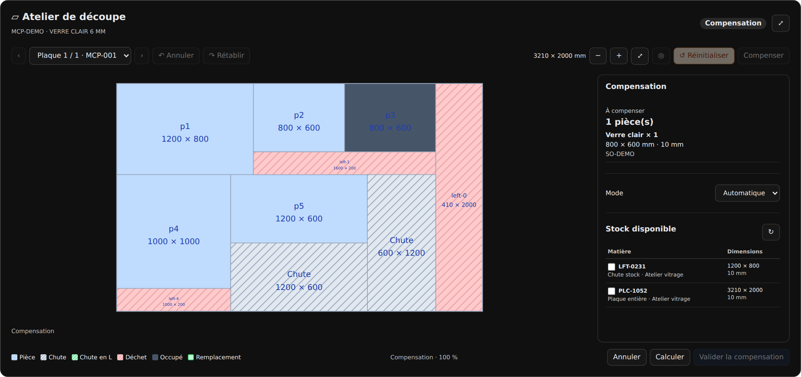
Figure 6 — L’atelier réel passe en compensation sans changer de disposition.
La compensation recherche d’abord une chute interne du MCP, puis une chute disponible du stock, puis une plaque entière. Elle ne modifie pas les pièces conformes pour refaire tout le plan.
Un besoin est rapproché d’une unité commerciale. Un ancien identifiant de série ou une zone détruite ne doit pas être compté comme une nouvelle pièce conforme.
17 · Flowchart de compensation
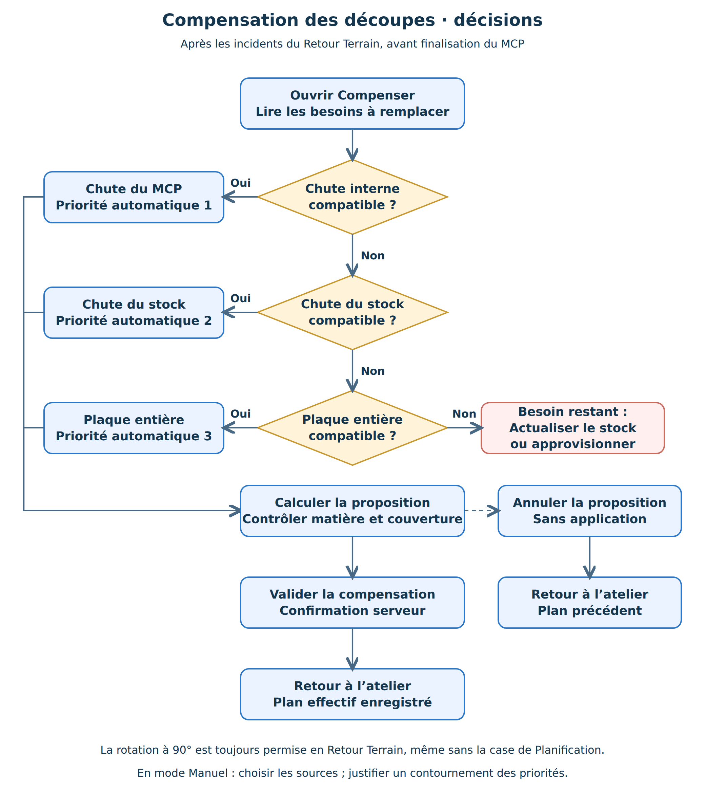
Flowchart 2 — Priorités et décision de compensation à confirmer avec l’atelier.
18 · Contrôler et valider la compensation
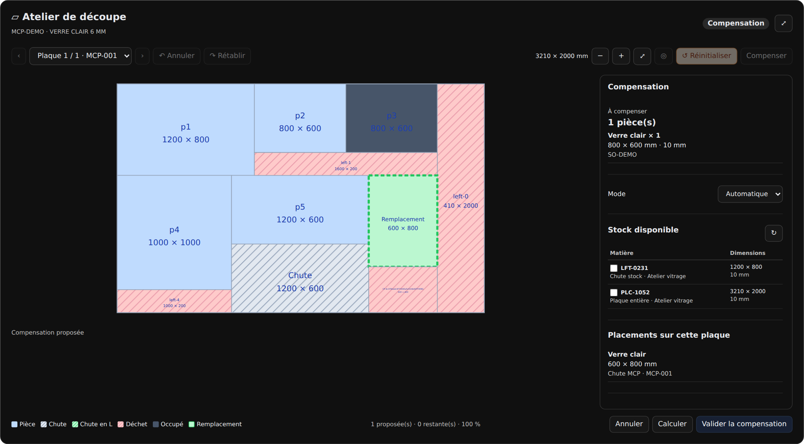
Figure 7 — Proposition utilisant une chute interne dans le composant réel.
Contrôler chaque pièce proposée et la plaque ou chute d’origine.
Contrôler le nombre remplacé, les besoins restant non couverts et les avertissements.
Si la proposition convient, choisir Valider la compensation.
Attendre la confirmation d’enregistrement. L’atelier revient sur le plan effectif.
Pour abandonner la proposition, choisir Annuler : retour à l’atelier sans appliquer la compensation.
Le serveur recontrôle la version du document, la disponibilité du stock, les dimensions et la cohérence de la proposition. En cas de changement de stock ou de document, actualiser puis recalculer.
19 · Stock ajouté et choix manuel
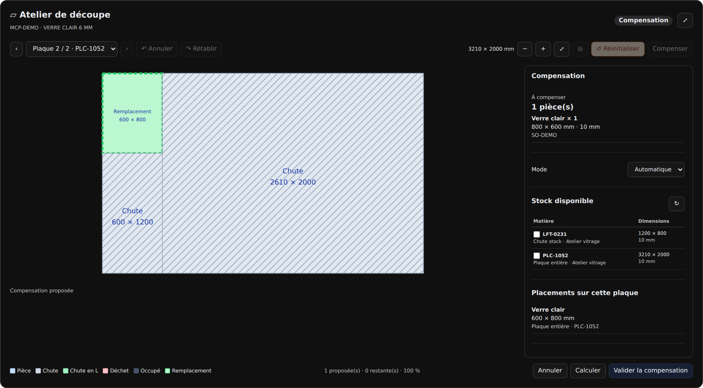
Figure 8 — Visualisation d’une source de stock ajoutée à la proposition.
Mode Automatique
Lorsque les chutes du MCP ne suffisent pas, le calcul peut utiliser une chute du stock puis une plaque entière. Les plaques ajoutées sont accessibles par la navigation, une page par plaque. La rotation est autorisée quelle que soit la case initiale.
Mode Manuel
Choisir Manuel et sélectionner les sources admissibles dans le panneau de droite.
Pour une chute interne, se placer sur sa plaque et la sélectionner dans les choix proposés.
Pour le stock, cocher la source disponible correspondante.
Saisir une justification si le choix contourne la priorité automatique.
Calculer puis contrôler avant de valider.
Si aucun stock compatible n’est disponible, ne pas forcer la validation. Actualiser le stock, vérifier la matière et l’épaisseur ou faire approvisionner selon votre circuit.
20 · Réinitialiser : revenir à la Planification
Cliquer Réinitialiser.
Lire l’avertissement : tous les incidents, compensations et modifications en attente seront supprimés.
Choisir Annuler pour conserver l’état courant, ou Confirmer pour poursuivre.
Après confirmation serveur, contrôler le plan initial et la disparition des incidents. L’atelier reste ouvert.
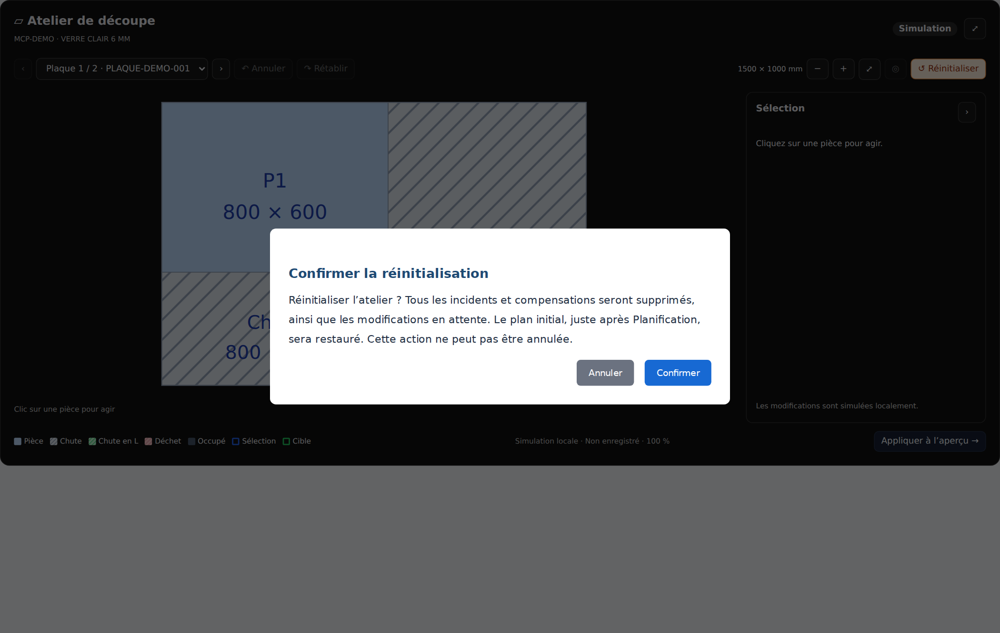
Figure 9 — Texte réel de confirmation ; présentation du dialogue dans un hôte local.
Action
Portée
Annuler une opération
Abandonne l’opération en cours.
Annuler / Rétablir dans l’historique
Parcourt les modifications de la session.
Annuler en compensation
Abandonne la proposition non validée.
Réinitialiser + confirmer
Supprime les incidents enregistrés et en attente, abandonne les compensations, vide l’historique et restaure le plan après Planification.
21 · Créer et contrôler un Repack depuis le MCP
Dans l’atelier, appliquer les incidents ou valider la compensation. Revenir au formulaire et contrôler l’enregistrement.
Choisir Create Draft Repack. Le bouton prépare une Stock Entry de type Repack à partir du plan effectif.
Enregistrer le brouillon de Stock Entry et contrôler Company, lien Material Cutting Plan et date.
Contrôler les entrées : articles, entrepôts source et séries consommées.
Contrôler les sorties : pièces conformes, chutes et déchets si l’option est activée ; comparer au plan effectif.
Contrôler quantités, bundles, dimensions et valeurs. Les zones détruites ne sont pas des sorties conformes.
Soumettre selon les droits et la procédure stock, puis vérifier le mouvement réel et les séries produites.
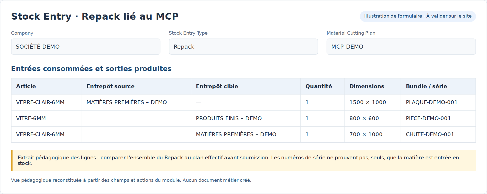
Figure 13 — Illustration d’un extrait de lignes de Repack ; compléter le contrôle sur toutes les lignes.
22 · Repack à partir d’une ligne de commande
Ce circuit transforme ou assemble des pièces déjà disponibles pour satisfaire une ligne de Sales Order. Il est distinct du MCP qui découpe la matière source.
Ouvrir une Stock Entry brouillon de type Repack et renseigner Company.
Choisir Get Pending SO Line.
Lire la quantité commandée, déjà générée, restante et satisfaisable par le stock.
Sélectionner une seule ligne. La version livrée du bouton de script utilise Create Repack ; une variante de fixture peut utiliser Generate Repack.
Contrôler le Repack obtenu, les composants, leurs entrepôts et les sorties, puis enregistrer / soumettre selon la procédure.
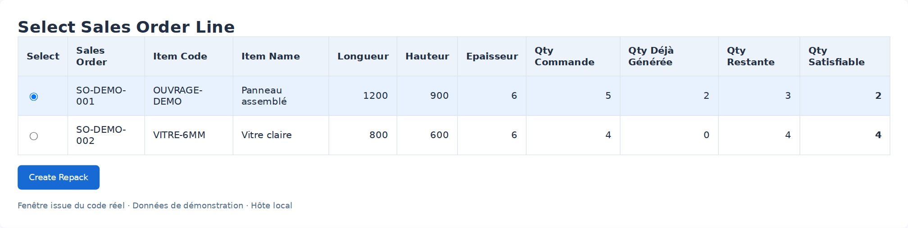
Figure 14 — Fenêtre issue du script réel, avec lignes de commande fictives.
Une copie de ce dialogue existe aussi dans les Client Scripts livrés. Faire confirmer le bouton réellement actif sur le site pour éviter les doublons et choisir la procédure de formation correspondante.
23 · Sortir une matière sans produire de pièces
Material Issue Plan sert à organiser une sortie de matière PRIMAIRE, par exemple une plaque détériorée ou une consommation qui ne produit pas de découpes dans ce circuit.
Créer Material Issue Plan et renseigner Company, Source Warehouse, Source Item et Reason.
Enregistrer pour charger les séries candidates.
Cocher Is Qualified pour les séries réellement à sortir ; ajouter Remarks si nécessaire.
Enregistrer et vérifier Total Serials et Total Area.
Soumettre : une Stock Entry Material Issue est créée et soumise pour les séries sélectionnées.
Contrôler le mouvement et la disponibilité des séries après sortie.
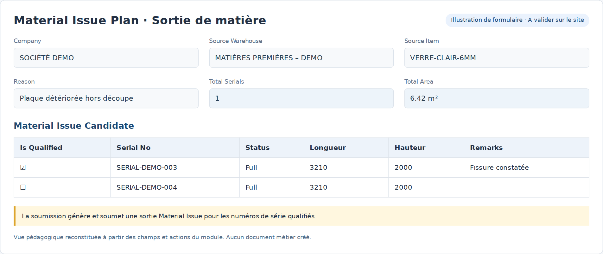
Figure 12 — Illustration des champs et de la sélection d’une sortie de matière.
24 · Reconfiguration historique et plan de production
Material Reconfiguration : circuit existant
Choisir société, commande, matière source et entrepôt.
Choisir le produit fini et la ligne de commande ; vérifier quantité, longueur, largeur et Kerf mm.
Enregistrer pour proposer un plan multi-plaques et contrôler le tableau Detail.
Vérifier les catégories Raw Material, Finished Good et By Product, ainsi que les quantités manquantes d’un plan partiel.
Soumettre seulement selon le circuit historique validé. Cette soumission change l’état de séries source et prépare des séries de sortie.
Après soumission, le bouton Create Repack (New, Bundled) ouvre une nouvelle Stock Entry avec bundles. Contrôler et soumettre le Repack pour le mouvement de stock.
Material Production Plan
Le formulaire et ses statuts existent dans le module, ainsi qu’un type de ligne de nœud. Le contrôleur livré est vide et le script client ne fournit pas d’automatisation active. Ce manuel ne présente donc pas génération d’arbre, contrôle stock ou exécution comme des fonctionnalités opérationnelles de cet écran.
Décision à valider : conserver cet écran comme support manuel, compléter son développement ou l’exclure du périmètre opérateur.
25 · Traçabilité, valeur et documents imprimés
Suivre une pièce ou une chute
Ouvrir Serial No et contrôler article, dimensions, état et entrepôt.
Consulter les liens au MCP, au mouvement de stock et à la série parent / racine lorsqu’ils sont renseignés.
Contrôler le Serial and Batch Bundle de la ligne de mouvement : ses séries représentent les unités réellement sélectionnées.
Sur Delivery Note ou Sales Invoice, choisir le bundle approprié et vérifier les dimensions reportées et le nom de l’article.
Valeur des matières
Les fonctions de Repack répartissent le coût matière vers les sorties selon les surfaces, avec ajustement d’arrondi. La surface utile d’une chute en L exclut son encoche. Une valeur d’entrée nulle peut bloquer la répartition ; faire contrôler la valorisation et les unités par le responsable stock.
Imprimer
Les formats livrés incluent Devis v2, Sales Order v2, Bon Livraison v2 et Plan de Découpe. Ouvrir Imprimer sur le document et choisir le format installé. Contrôler l’aperçu avant impression et vérifier que le plan imprimé représente bien le mode / résultat souhaité.
L’installation des formats et des scripts dépend des fixtures du site. La présence dans le code ne garantit pas leur activation dans chaque environnement.
26 · Résoudre les problèmes courants
Constat
Vérification / action
Aucun stock proposé
Article PRIMAIRE, entrepôt, variantes, séries Full/Partial et dimensions positives ; refaire Get Stock.
Commande absente de la sélection
Commande et besoin liés à la matière source ; hiérarchie des articles / composants ; statut de la commande.
Pièce ne passe pas
Longueur ET largeur, épaisseur, kerf, orientation et place réellement libre ; pas seulement la surface.
Déplacer impossible
Produit fini sélectionné, chute compatible, orientation choisie et mode Retour Terrain.
Fusion / L refusé
Même plaque, contiguïté, forme attendue et absence d’empiétement sur une encoche.
Destruction enregistrée mais besoin restant
Ouvrir Compenser, contrôler couverture et recalculer.
Stock ou document changé
Actualiser / recharger, puis recalculer la proposition ; ne pas réutiliser une proposition obsolète.
Incidents non sauvegardés
Confirmer puis Appliquer à l’aperçu → et attendre le retour serveur.
Réinitialisation refusée
MCP brouillon, version courante et absence de Repack soumis lié aux découpes.
Soumission MCP bloquée
Besoins non couverts ou incohérences de production ; contrôler la compensation et les commandes.
Repack refusé
Séries déjà produites / consommées, quantités, limites du MCP, bundles et valorisation.
Dimensions non reportées
Article DECOUPE, bundle, première série et activation des scripts du site.
Accès refusé / bouton absent
Droits du compte, état brouillon/soumis, mode et configuration du site.
27 · Exemple guidé et contrôle de fin de poste
Exercice avec données de formation
Préparer une demande de pièce 800 × 600 × 6 mm et une matière compatible.
Créer et enregistrer une Planification MCP ; conserver la case Allow Rotation décochée pour l’exercice.
Passer en Retour Terrain. Déplacer la pièce sur une chute 600 × 800 mm avec orientation Automatique : vérifier la rotation à 90°.
Annuler l’opération de test, puis déclarer une pièce cassée et appliquer l’incident.
Ouvrir Compenser. Calculer une proposition interne, puis tester une proposition de stock si le cas de formation le permet.
Annuler une proposition et vérifier que le plan ne change pas ; recalculer et valider pour le scénario retenu.
Sur un MCP sans Repack soumis, tester Réinitialiser : annuler l’avertissement puis, dans un second essai, confirmer la restauration.
Préparer le Repack du scénario approuvé et contrôler les entrées / sorties avant toute soumission.
Checklist
□ Les dimensions et l’épaisseur du besoin client sont vérifiées.
□ La matière qualifiée et la matière réellement utilisée sont identifiées.
□ Les incidents du poste ont été appliqués et enregistrés.
□ Les pièces conformes et les remplacements couvrent les besoins.
□ Le Repack correspond au plan effectif et aux séries réellement manipulées.
□ Les documents soumis et les exceptions sont transmis au responsable.
28 · Validation ensemble
Proposition de revue : commencer par le flowchart principal, puis valider les boutons et les captures avec un opérateur et un responsable stock. Mettre à jour ce document avant diffusion officielle.
Point à décider
Proposition actuelle
Décision / commentaire
Qui planifie ?
Responsable atelier habilité
À compléter
Qui saisit les incidents ?
Opérateur habilité
À compléter
Qui valide une compensation ?
Responsable atelier ou délégation
À compléter
Quand soumettre le MCP ?
Circuit distinct du Repack à définir
À compléter
Qui soumet les Repack ?
Responsable de stock
À compléter
Quand utiliser Material Issue Plan ?
Sortie de matière sans pièces produites
À compléter
Maintenir le circuit historique ?
Traiter séparément de MCP UX 2.0
À compléter
Material Production Plan
Hors parcours automatisé actuel
À compléter
Formats / scripts ERPNext
Confirmer activation et libellés
À compléter
Captures des formulaires
Remplacer les illustrations par captures du site
À compléter
Recette utilisateur proposée
□ Réception avec séries et montants répartis.
□ Planification multi-commandes et stock qualifié.
□ Déplacement inter-plaque / rotation avec case initiale décochée.
□ Resize, Destroy, Merge et chute en L.
□ Compensation interne, chute stock et plaque entière.
□ Annulation et avertissement de réinitialisation.
□ Contrôle Repack, traçabilité et documents imprimés.
Validé par : _____________________ Fonction : _____________________
Date : _____________________ Version approuvée : _____________________
29 · Annexe : réglages et périmètre analysé
Réglages administrateur
Reconfiguration Settings expose kerf, dimension minimale conservable, rotation, politique de split, nombre maximal de chutes, réutilisation partielle, stratégie de coupe, algorithme et heuristique. Certains réglages concernent principalement le moteur historique ; ne pas supposer qu’ils pilotent tous les écrans de la même manière.
Zone analysée
Sources du module
Formulaires et droits
DocTypes et tables enfants JSON ; contrôleurs et scripts de formulaire.
MCP / Retour Terrain
cutting_plan_service, mcp_incident_service, mcp_action_preview ; atelier Vue et modal.
order_explosion_service, Material Reconfiguration, cut_engine et selection_engine.
Extensions ERPNext
hooks, fixtures de champs, 9 Client Scripts, 4 Server Scripts, 4 formats imprimés.
Périmètre non opérationnel
Material Production Plan : structure de formulaire sans orchestration active.
Les fichiers de copies historiques, les dépendances installées et les bundles générés ne sont pas considérés comme de nouvelles fonctionnalités. Les captures reflètent les sources et assets présents dans l’espace de travail, qui peuvent différer d’une version de production non mise à jour.